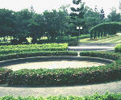
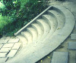
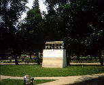

呂清夫 撰文

東邊粗獷的磚紅入口已被封死，另闢一個單調的大門。過了磚紅的入口立即映入眼簾的本是一池碧水（見上圖），現在池水已乾，一片灰黃（見右圖），放水給眼睛看似乎已被視為浪費，精緻的設計已被視同糞土。圓形水池四周散布的白色歐風鋼椅，自然也片甲不留。至於本來十分壯麗的拱式花棚，更在濃濃黃塵覆蓋之下，垂唾老矣。
烤肉區的石頭早已不務正業，出售烤肉材料的窗口硬被塞進了殺風景的冷氣機。窗口前瓜棚式的﹁亭仔腳」成了垃圾車的集散地，瓜棚下很有味道的木質吊燈已經像被颱風颳過一般，只剩飄零的殘骸，無人聞問，好像吊燈理當如此，亮不亮才有關係。東北角的木橋和半月形的階梯（見左圖），本來架在碧流芳草之上，韻致天成，並有曲徑通幽之美。但是目前這一帶幾乎寸草不留，水也乾了，只見一條很長的塑膠繩，莫名其妙的牽在那裏，不知是否又要大興土木？日前報載，榮星花園要蓋所謂的音樂合，遭到附近居民的反對。居民可能是從未來的噪音、交通、治安等角度來考量，一件美好的事情給人以這麼多不美的顧慮，整個社會都要反躬自問。不過單徙蓋房子本身來看，我們也是沒有信心，目前整個園區幾乎形同廢園，本來是台北市最美麗的公園，好像已經靈魂出竅，在「靈魂」尋回之前，任何建設都可能變成日後的包袱。
跟前就有現成的例子，因為園中新近建造了幾座城門似的鳥屋（見右圖），其粗製濫造及濫挖濫建，實在今人搖頭。不僅如此，在涼亭的屋頂上面也蓋出一個個的鳥屋，好像屋頂長瘤一般。不知是誰的主意，堪稱世界奇觀。其實，大至威尼斯的聖馬可大教堂，小至東京的淺草寺，雖然都有很多很多的鴿子，然而就是讓人永遠不知鴿子住在哪裏？我們只有那幾隻鴿子，居然要大建特建，唯恐有誰不知，真是咄咄怪事。所以將來如果也用這種蓋鳥屋的手法，去蓋音樂合的話，榮星真要萬劫不復。不幸中之大幸的是，沒有人提出要蓋所謂宮殿式的涼手台榭之類，不然那種從古人身上生吞活剝過來的大紅大綠，及俗裏俗氣的光亮瓷磚是與原來的歐風庭園很不搭調的，台北新公園的不中不西便是前車之鑑。要之，公園的景觀不是土法煉鋼就可以做好的，台北的大小公園已夠多像是部隊的營區了，單憑從政者一時好惡漆成的粉紅嫩綠天橋也不要再重演了。榮星花園的舊觀就是在「土法」之下搞壞的，其實，它的舊觀應該還留在很多人的記憶之中，有人在那裏拍下童年的歡顏，有人在那裏留下新婚的儷影，有的曾流連於三色蓳之間，有的曾徘徊於小木橋之上，花園幾乎是很多人的故友，但是看到它的垂老，甚至即將癡呆，不由得令人悲從中來。但願主其事者手下留情，景觀專家趕快進場，榮星榮星，魂兮歸來！
原載1991.9.30.自立早報